Multi-Cloud & Infrastructure Discovery Made Simple
Born from Kubernetes discovery, Kollect now inventories your entire estate — public clouds, containers, virtualization, and DevOps tooling — through one web interface, a single binary, and a built-in MCP server for AI-powered analysis.
 Kollect
Kollect






Platform Coverage
Kollect groups integrations the way the app does — Cloud, Cloud-Native, DevOps, and Virtualization. Everything below is available today; dashed badges are on the roadmap.
Cloud
EC2, S3, RDS, DynamoDB, VPCs, EBS • VMs, Storage, VNets, SQL, CosmosDB • Compute, Buckets, Cloud SQL, disks.
Cloud-Native
Docker
Nodes, namespaces, pods, deployments, services, PVs and KubeVirt VMs • Red Hat OpenShift clusters • Docker containers, images, volumes, networks.
DevOps
GitHub SOON
Azure DevOps SOON
Jira SOON
Confluence SOON
Terraform state analysis (local, S3, Azure Blob, GCS) • HashiCorp Vault secrets engines, auth methods and policies.
Virtualization
Hyper-V
Proxmox
Nutanix
HPE SOON
XCP-ng SOON
OpenStack SOON
VMware vSphere with live performance metrics • Microsoft Hyper-V (standalone and failover clusters) • Proxmox VE • Nutanix AHV.
Beyond Inventory
Snapshot Hunter
Find snapshots and orphaned backups across Kubernetes, the public clouds (AWS, Azure, GCP) and hypervisors (vSphere, Nutanix) with a single --snapshots run.
Cost Explorer
Real-time cost analysis for cloud resources and snapshots, so you can spot spend and reclaim storage.
Platform Mapper
Visualize how discovered platforms and resources connect across your infrastructure.
MCP Server
A native Model Context Protocol server (--mcp) lets Claude and other AI tools read, analyze, and search your inventory.
Scenario Builder Export
Export discovered AWS, Azure, GCP, vSphere, Proxmox, Hyper-V, and Nutanix workloads to Veeam Scenario Builder CSV.
Download Kollect
A single, self-contained binary for your platform — no dependencies to install
Quick Installation
# Download and make executable (amd64; use kollect-linux-arm64 for ARM)
curl -L -o kollect https://github.com/MichaelCade/kollect-web/releases/latest/download/kollect-linux-amd64
chmod +x kollect
# Launch the web interface
./kollect --browser# Apple Silicon (M1/M2/M3). For Intel Macs use kollect-darwin-amd64
curl -L -o kollect https://github.com/MichaelCade/kollect-web/releases/latest/download/kollect-darwin-arm64
chmod +x kollect
# macOS may quarantine the download; clear it if needed
xattr -d com.apple.quarantine kollect 2>/dev/null || true
# Launch the web interface
./kollect --browser# PowerShell (amd64; use kollect-windows-arm64.exe for ARM)
Invoke-WebRequest -Uri "https://github.com/MichaelCade/kollect-web/releases/latest/download/kollect-windows-amd64.exe" -OutFile "kollect.exe"
# Launch the web interface
.\kollect.exe --browser# Pull and run (multi-arch: works on amd64 and arm64)
docker run --rm -p 8080:8080 ghcr.io/michaelcade/kollect:latest
# Then open http://localhost:8080 and connect to your platforms in the browser.
# The container does NOT use your host's CLI credentials — enter them in the web
# UI (access key/secret, service principal, service-account key, kubeconfig, or
# host/username/password) when you connect.
# Optional: inventory the host's own Docker (grants root-equivalent host access)
docker run --rm -p 8080:8080 \
-v /var/run/docker.sock:/var/run/docker.sock \
ghcr.io/michaelcade/kollect:latest